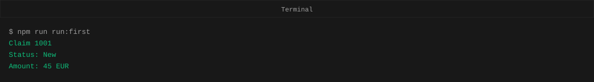
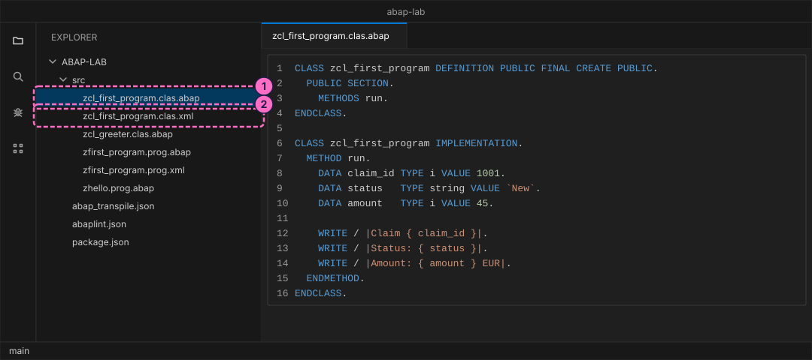
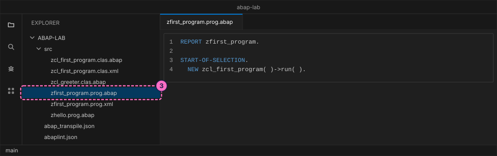
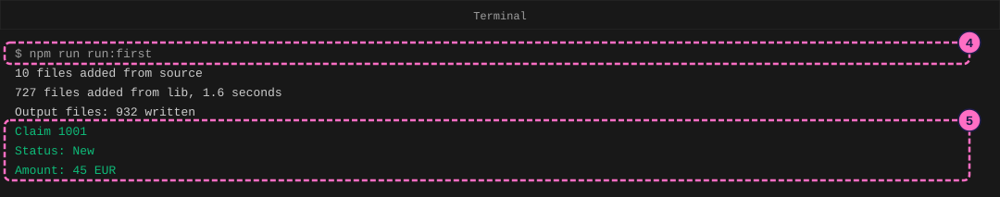
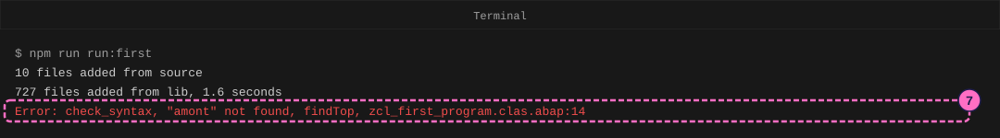
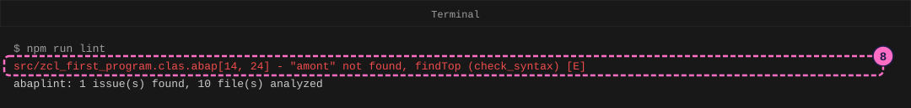

ABAP Guide: Your First ABAP Program
|
This content was generated with the assistance of AI and should be verified against the official documentation before being relied on in production. |
Checked on 2026-11-13 against open-abap 2.14.30 (the abaplint transpiler and runtime), abaplint 2.120.103 and Node.js 24.21.
What you build
You write a small ABAP program in two pieces: a class named zcl_first_program with a method run that prints three lines about
one expense claim, and a report named zfirst_program that creates the class and calls run. You transpile the sources to
JavaScript, run them on Node.js and read the output. Then you make a deliberate spelling mistake, read the first error message
that the tools print, and fix it.
The playground is open-abap, a community open-source project, not SAP software. It runs only the part of the ABAP language that
it implements, so a program that works here needs a check on a real SAP system before you rely on it there. Output is written
with WRITE, the classic list statement; the keyword documentation no longer recommends it for new code, and it is what the
playground offers.

Before you start
-
No account is needed: Node.js, the abaplint tools and open-abap install from the public npm registry without signing in. The licences you accept by installing (MIT for the abaplint packages) are listed in the README of the ABAP lab.
-
Set up the lab first, with the guide Set Up a Local ABAP Playground: the folder
abap-labwithnpm installdone, and an editor such as Visual Studio Code open on it. This guide adds files to itssrcfolder. -
The lab already holds the finished files of this guide in
modules/ROOT/examples/abap-lab/src/. Type them yourself rather than copying them, so that you meet the errors in this guide on your own screen. -
Read Programming Concepts for Newcomers for the words variable, statement and method, and Program Types and Structure for what a report is.
-
The figures are drawings of the editor and the terminal, not screenshots. A highlighted box with a number marks the file or line of the step with the same number.
Steps
An ABAP object in the lab is stored as two files with the same name, the layout of the abapGit project: a .abap file with the source and a .xml file with the object’s attributes (its name, its description and the like). The tools find objects by these file names, so the names matter. A class is <name>.clas.abap and <name>.clas.xml, and a report is <name>.prog.abap and <name>.prog.xml.
Write the class
-
In the
srcfolder, create the filesrc/zcl_first_program.clas.abapwith this source. TheDEFINITIONpart announces what the class offers (one method,run), and theIMPLEMENTATIONpart holds the code of the method. Insiderun, threeDATAstatements declare variables with a type and a start value, and threeWRITEstatements print one line each. The|...|text with{ }is a string template: the value of the variable replaces the braces.CLASS zcl_first_program DEFINITION PUBLIC FINAL CREATE PUBLIC. PUBLIC SECTION. METHODS run. ENDCLASS. CLASS zcl_first_program IMPLEMENTATION. METHOD run. DATA claim_id TYPE i VALUE 1001. DATA status TYPE string VALUE `New`. DATA amount TYPE i VALUE 45. WRITE / |Claim { claim_id }|. WRITE / |Status: { status }|. WRITE / |Amount: { amount } EUR|. ENDMETHOD. ENDCLASS. -
Create the second file of the class,
src/zcl_first_program.clas.xml, next to it:<?xml version="1.0" encoding="utf-8"?> <abapGit version="v1.0.0" serializer="LCL_OBJECT_CLAS" serializer_version="v1.0.0"> <asx:abap xmlns:asx="http://www.sap.com/abapxml" version="1.0"> <asx:values> <VSEOCLASS> <CLSNAME>ZCL_FIRST_PROGRAM</CLSNAME> <LANGU>E</LANGU> <DESCRIPT>First program</DESCRIPT> <STATE>1</STATE> <FIXPT>X</FIXPT> <UNICODE>X</UNICODE> </VSEOCLASS> </asx:values> </asx:abap> </abapGit>
Write the report that starts it
A class cannot start by itself. A report is a program that can be started, so you write a short one that creates an object of your class and calls its method.
-
Create
src/zfirst_program.prog.abapand its attribute filesrc/zfirst_program.prog.xml. TheREPORTstatement names the program,START-OF-SELECTIONis the block that runs when the program starts, andNEW zcl_first_program( )->run( )creates the object and callsrunon it.REPORT zfirst_program. START-OF-SELECTION. NEW zcl_first_program( )->run( ).<?xml version="1.0" encoding="utf-8"?> <abapGit version="v1.0.0" serializer="LCL_OBJECT_PROG" serializer_version="v1.0.0"> <asx:abap xmlns:asx="http://www.sap.com/abapxml" version="1.0"> <asx:values> <PROGDIR> <NAME>ZFIRST_PROGRAM</NAME> <SUBC>1</SUBC> <RLOAD>E</RLOAD> <UCCHECK>X</UCCHECK> </PROGDIR> </asx:values> </asx:abap> </abapGit>
Transpile and run
ABAP does not run on Node.js directly. The transpiler turns every ABAP file of src into a JavaScript file in the output folder, and Node.js runs the JavaScript file of the report.
-
In the terminal, in the
abap-labfolder, run the script that does both:npm run run:first -
Read the output. The transpiler first prints how many files it found in
srcand in the open-abap library (which it fetches once) and how many output files it wrote; the figure shows one example run, and your counts will differ because the lab grows with every guide. The last three lines come from your program:Claim 1001 Status: New Amount: 45 EURThe figure leaves out the lines that tell which library version the transpiler cloned.

Read your first error
Every programmer meets error messages daily. You make one on purpose, in a place where you know the fix.
-
Open
src/zcl_first_program.clas.abapand change the variable in the thirdWRITEstatement (line 14) fromamounttoamont. Save the file. The nameamontwas never declared, so the program no longer makes sense. -
Run
npm run run:firstagain. The transpiler checks the syntax before it translates anything, stops at the first problem and prints one line, and Node.js does not run. The line has four parts:check_syntaxis the check that failed,"amont" not foundis what is wrong,findTopis an internal detail you can ignore, andzcl_first_program.clas.abap:14is the file and the line.
-
Run
npm run lintto ask abaplint, the static checker of the lab, about the same file. It reports the same problem with the column as well. The finding readsfile[line, column] - message (rule) [severity]: line 14, column 24 is where the unknown name starts,check_syntaxis the rule that found it, and[E]means error.npm run lint
-
Change
amontback toamount, save and runnpm run run:first. The three output lines return, andnpm run lintreports0 issue(s) found.
Check the result
npm run run:first ends without an error and prints the three lines Claim 1001, Status: New and Amount: 45 EUR. npm run lint prints abaplint: 0 issue(s) found, 10 file(s) analyzed, and npm test still passes with the test of the lab’s greeter class.
Variations
-
Change the start values (
1001,New,45) and run again to see your values in the output. -
Add a fourth
DATAvariable and a fourthWRITEline, for example for a currency code. -
Delete the final period of one statement and read how the error message changes.
What can go wrong
| Symptom | Cause | Fix |
|---|---|---|
|
A name is misspelled or was never declared. |
Open the file and line named at the end of the message and correct the name. |
The old output appears although you changed the code |
You ran |
Run |
|
The |
Run |
|
The file is not under |
Move it to |
Where to go next
-
Next in this section: Data Types, Strings and String Templates, which goes deeper into the
DATAstatements and templates you used here. -
Reference: Program Types and Structure.
-
Reference: Getting Started.